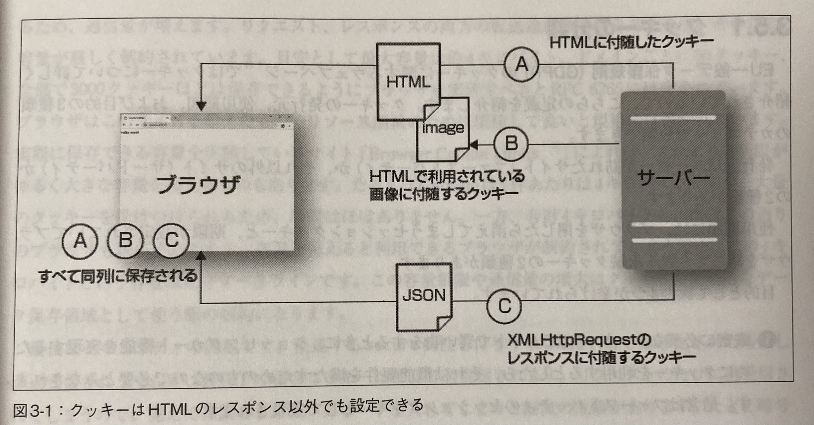

class: center, middle # 3章 # HTTP/1.0のセマンティクス: <br> ブラウザの基本機能の裏側 --- # 目次 - フォームやファイルの送付 - ブラウザが期待する言語のコンテンツや画像フォーマットのファイルを取得 - 認証を使って、ユーザー固有のコンテンツを表示する仕組み - クッキーを使い、アクセスのたびにログイン操作せずに済む仕組み - プロキシを使った外部キャッシュやフィルタリングの導入 - リファラー - 検索エンジン向けのアクセス制御 - ユーザーエージェント --- # フォームの送信 ## シンプルなフォーム ```html <form method="POST"> <input name="title"> <input name="author"> <input type="submit"> </form> ``` `$ curl --httpl.0 -d title="The Art of Community" -d author="Jono Bacon" http://localhost: 18888` --- ## フォームを使ったファイルの送信 ### マルチパートフォーム形式 ```html <form method="POST" enctype="multipart/form-data"> <input type="file" name="file"> <input type="submit"> </form> ``` --- ### 境界を指定して、ファイルのデータを送信 「ヘッダーフィールド＋空行＋コンテンツ」<br> ```text ----WebKitFormBoundaryyOYfbccgoID172j7 <br> Content-Disposition: form-data; name="title"<br><br> The Art of Community<br> -----WebKitFormBoundaryyOYfbccgoID172j7<br> Content-Disposition: form-data; name="author"<br><br> Jono Bacon<br> ------WebKitFormBoundaryyOYfbccgoID172j7-- ``` --- # クッキー サービス側がクライアント（ブラウザ）に保存を指示 名前（キー）=値の形式で保存 ``` LAST_ACCESS_DATE=Jul/31/2016 LAST_ACCESS_TIME=12:04 ``` --- - -c/--cookie-jarオプションで指定したファイルにサーバーから受け取ったクッキーを保存 - -b/--cookieオプションで指定したファイルから読み込んでクッキーを送信 - -b "name=value"でクッキーを追加 `$ curl -http1.0 -c cookie.txt -b cookie.txt -b "name=value" http://example.com/helloworld` ---  --- ## 制約 | 属性 | 説明 | 省略時の動作 | |------------|---------------------------------------------------------------------------------------------------------------------------------------------|-----------------------------------------------------------------| | **Expires、Max-Age** | **Expires**: `Med, 89 Jun 2821 10:18:14 GRT` 形式の日時で有効期限を設定<br>**Max-Age**: 現在時刻から指定秒数後に無効化 | 省略時: ブラウザを閉じた瞬間に消えるセッションクッキー | | **Domain** | クッキー送信先のサーバーを指定 | クッキーを発行したサーバー | | **Path** | クッキー送信対象のサーバーのパスを指定 | クッキーを発行したサーバーのパス | --- class: center, middle | 属性 | 説明 | 省略時の動作 | |------------|---------------------------------------------------------------------------------------------------------------------------------------------|-----------------------------------------------------------------| | **Secure** | HTTPS接続時のみクッキーを送信<br>DNSハッキングによる不正送信リスクを軽減 | HTTP接続時: クッキーは送信されず流出を防止 | | **HttpOnly** | JavaScriptからクッキーを隠す<br>セキュリティ向上: クロスサイトスクリプティングなどのリスク軽減 | なし | | **SameSite** | 同じサイトのドメインに対してのみクッキーを送信<br>設定可能な値: `None`、`Lax`、`Strict` | なし | --- ## オリジン 同じオリジン http://www.example.comと、 - http://example.com:80: HTTPはデフォルトで80番ポートを使うので同一 - http://example.com/news： パス違いはOK すべて別のオリジン http://www.example.com:example.comと、 - www.example.comは別のドメイン - https://example.com： スキームが違う - http://example.com:8080：ポートが違う --- ## 認証 ### Basic認証 `$ curl --httpl.0 --basic -u user:pass http://localhost:18888` - ユーザー名とパスワードを、base64エンコーディング(可逆変換) - SSL/TLS通信を使っていない → ユーザー名とパスワードが漏洩 - base64（ユーザー名＋"；"+パスワード） - 以下のようなフィールドが付与 <br> `Authorization: "Basic dXNlcjpwYXNz"` --- ### Digest認証 - ハッシュ関数 - 401 Unauthorized というステータスでレスポンス - 以下のようなフィールドが付与 <br> `ww-Authenticate: Digest realm="エリア名"，nonce="1234567890"， algorithm=SHA-256, qOp="auth"` --- ### Basic認証もDigest認証も今はあまり使われない - リクエストごとに計算するので、負荷が高い - ログイン画面をカスタマイズできない - 明示的なログオフができない - ログイン端末の識別ができない --- ## プロキシ **HTTPなどの通信を中継** - キャッシュ機能 - フィルタリング機能 **実現方法** - GETなどのメソッドに来るパス名にスキームを追加 `$ curl --httpl.0 -x http://localhost:18888 -U user:pass http://exmaple.com/helloworld` ↕︎ ゲートウェイ（通信内容をそのまま転送） --- ## キャッシュ プロキシサーバーとCDNの2種類 ### 更新日時によるキャッシュ コンテンツの新旧を比較 <br> `Last-Modified: Wed, 08 Jun 2016 15:23:45 GMT` 変更の確認 <br> `If-Modified-Since: Wed, 08 Jun 2016 15:23:45 GMT` --- <img src="images/スクリーンショット 2024-07-24 22.30.34.png" alt="cookie" width="700px"> --- ### Expiresヘッダーフィールド キャッシュの期限内であれば、、キャッシュを強制使用してリクエストを送信しない<br> `Expires: Wed, 08 Jun 2016 15:23:45 GMT` <img src="images/スクリーンショット 2024-07-24 22.30.19.png" alt="cookie" width="400px"> --- ### 確実にキャッシュしない条件 - GETとHEAD以外の、べき等ではないメソッド - Cache-Controlヘッダーフィールドにprivateが設定されている - Cache-Controlヘッダーフィールドにno-storeが設定されている - Authorizationヘッダーフィールドがあるが、Cache-Controlフィールドにpublicがない - ステータスコードが200、203、207、302、410、404以外 --- ### ETagヘッダーフィールド コンテンツのハッシュ値を生成し、比較 <img src="images/スクリーンショット 2024-07-24 22.30.34.png" alt="cookie" width="500px"> --- ### Cache-Controlヘッダーフィールド | ディレクティブ | 説明 | |-------------------------------------|---------------------------------------------------------------------------------------------------------------------------------------------------| | public | 同一のコンピューターの複数ユーザー間でキャッシュ再利用 | | private | 同一のコンピューターの別のユーザー間でキャッシュを再利用しない | | max-age=n | キャッシュの鮮度を秒で設定 | | no-cache | キャッシュが有効かどうか毎回サーバーに問い合わせる。max-age=0とほぼ同じ | | no-store | キャッシュしない | | immutable | コンテンツが決して変化しないことを伝える。 | | cache-while-revalidate | キャッシュが期限切れでも古いコンテンツを一時的に使わせるが、裏でキャッシュの更新をさせる拡張ディレクティブ | --- <img src="images/スクリーンショット 2024-07-24 22.33.54.png" alt="cookie" width="600px"> --- ### Varyヘッダーフィールド クライアントに返すコンテンツを変える <br> `Vary: User-Agent, Accept-Language` <br> ログインが必要ならcookieの指示も --- ### リファラー リンク元のURL <br> 本来はreferrerだが、refererという誤記が定着 <br> 英語にwikiでは間違えた人の名前が記載（Phillip Hallam-Baker） <br> `Referer: http://exmaple.com/link.html` スキームの組み合わせとリファラーの有無 | アクセス元 | アクセス先 | 送信 | |------------|------------|------------------| | HTTPS | HTTPS | する | | HTTPS | HTTP | しない | | HTTP | HTTPS | する | | HTTP | HTTP | する | --- ポリシー 現在の主要プラウザのデフォルトはstrict-origin-when-crossorigin | | | |-----------------------------|--------------------------------------------------------------------------------------------------| | **no-referrer** | 一切送らない | | **no-referrer-when-downgrade** | 現在のデフォルト動作と同じで、HTTPS→HTTP時は送信しない | | **same-origin** | 同一ドメイン内のリンクに対してのみリファラーを送信 | | **origin** | 詳細ページではなく、トップページからリンクされたものとしてドメイン名だけを送信 | | **strict-origin** | originと同じだが、HTTPS→HTTP時は送信しない | | **origin-when-crossorigin** | 同じドメイン内ではフルのリファラーを、別ドメインにはトップのドメイン名だけを送信 | | **strict-origin-when-crossorigin** | origin-when-crossoriginと同じだが、HTTPS→HTTP時は送付しない | | **unsafe-url** | 常に送信 | --- ## クローラー向けのアクセス制御 クローラー・・・検索エンジンがWebページを収集するためのプログラム ### robots.txt クローラーのアクセスルールを指定するファイル。 - 例: ``` User-agent: * Disallow: /cgi-bin/ Disallow: /tmp/ ``` --- - HTMLのmetaタグでもクローラーの指示を指定可能。robots.txtが優先されるが、metaタグの方が詳細に指定できる。 - 例: ```html <meta name="robots" content="noindex" /> ``` - content属性のディレクティブ例: - `noindex`: 検索エンジンがインデックスするのを拒否。 - `nofollow`: クローラーがページ内のリンクをたどるのを拒否。 - `noarchive`: ページの内容をキャッシュするのを拒否。 --- - 同じディレクティブはHTTPヘッダー`X-Robots-Tag`でも指定可能。 - 例: ``` X-Robots-Tag: noindex, nofollow ``` - 2014年に日本の著作権法施行規則にrobots.txtが登場し、法律的な効力を持つ。 - 2006年の「フィールド対Google事件」では、robots.txtの存在が判決に影響。 - robots.txtでアクセス制限をしなかったため、著作権侵害を主張できなかった。 --- ### サイトマップ - robots.txt（ブラックリスト） ↔️ サイトマップ（ホワイトリスト） - XML形式が一番使われている - 単にURLが列挙されたテキストファイル、RSSやAtomといったブログの更新情報の通知で使われる形式もサイトマップとして利用される --- XML形式 ``` <?xml version="1.0" encoding="utf-8"?> <urlset xmlns="http://www.sitemaps.org/schemas/sitemap/0.9" xmlns: xsi="http://www.w3.org/2001/XMLSchema-instance" xsi: schemaLocation= "http://www.sitemaps.org/schemas/sitemap/0.9 http://www.sitemaps.org/schemas/sitemap/0.9/sitemap.xsd"> <url> <loc>http://example.com/</loc> <Lastmod>2006-11-18</lastmod> </url> </urlset＞ ``` - この`<url>`を登録したいページ数分作成 - `<loc>`は絶対URL（http://～まで含む） --- ## ユーザーエージェント ウェブの世界ではブラウザなどの通信を代行するプログラム 例: ```text User-Agent: Mozilla/5.0 (Macintosh; Intel Mac 0S X 10_12_6) AppleWebKit/537.36 (KHTML, likeGecko) Chrome/75.0.3770.142 Safari/537.36 ```